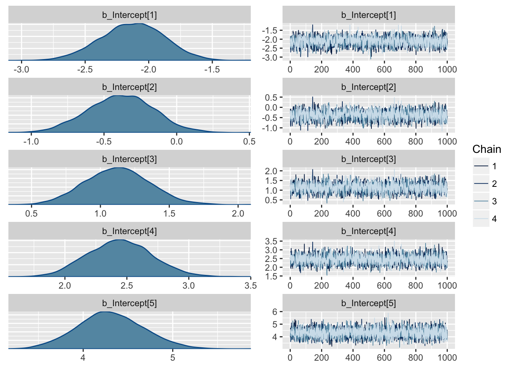
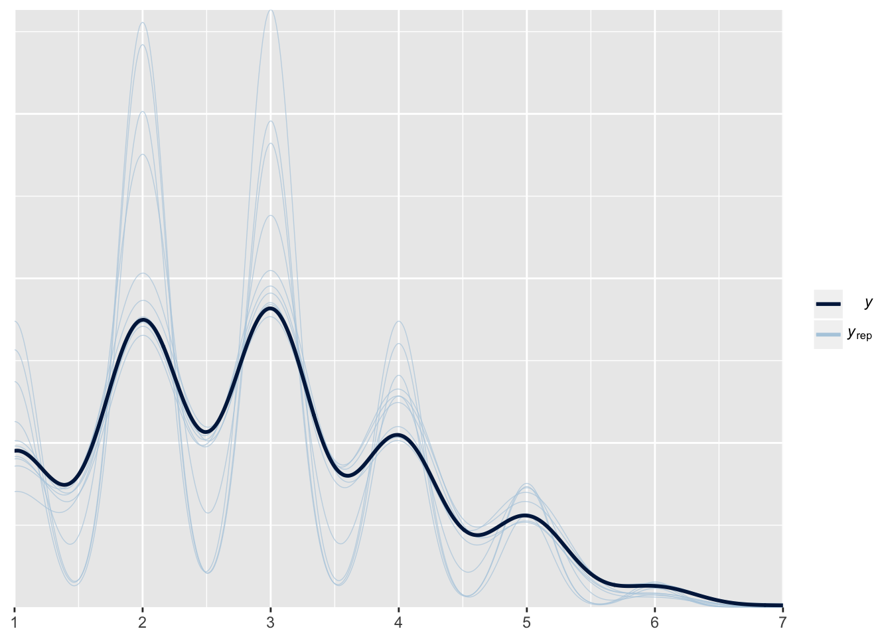

Tabu_with_rounds[which(Tabu_with_rounds$Guesser_SD == 0 & Tabu_with_rounds$Speaker_SD == 0),] %>% summarise_all(mean) %>% print.data.frame()## Warning in mean.default(pair): argument is not numeric or logical:
## returning NA## pair Round Correct Guesser_ID Guesser_SD Speaker_ID Speaker_SD
## 1 NA 3.5 1.883333 207.1667 0 207.1667 0
## total_attempts Score_ratio
## 1 3.711111 0.4966739Tabu_with_rounds[which(Tabu_with_rounds$Guesser_SD == 0 & Tabu_with_rounds$Speaker_SD == 0),] %>% summarise_all(sd) %>% print.data.frame()## pair Round Correct Guesser_ID Guesser_SD Speaker_ID Speaker_SD
## 1 26.94138 1.712589 1.27842 85.937 0 85.937 0
## total_attempts Score_ratio
## 1 1.615182 0.2895122Tabu_with_rounds[which(Tabu_with_rounds$Guesser_SD != Tabu_with_rounds$Speaker_SD),] %>% summarise_all(mean) %>% print.data.frame()## Warning in mean.default(pair): argument is not numeric or logical:
## returning NA## pair Round Correct Guesser_ID Guesser_SD Speaker_ID Speaker_SD
## 1 NA 3.5 1.784946 219.4516 0.5 219.4516 0.5
## total_attempts Score_ratio
## 1 3.586022 0.4893433Tabu_with_rounds[which(Tabu_with_rounds$Guesser_SD != Tabu_with_rounds$Speaker_SD),] %>% summarise_all(sd) %>% print.data.frame()## pair Round Correct Guesser_ID Guesser_SD Speaker_ID Speaker_SD
## 1 30.25382 1.712435 1.206733 97.93186 0.5013495 97.93186 0.5013495
## total_attempts Score_ratio
## 1 1.53363 0.2888279Tabu_with_rounds[which(Tabu_with_rounds$Guesser_SD == 1 & Tabu_with_rounds$Speaker_SD == 1),] %>% summarise_all(mean) %>% print.data.frame()## Warning in mean.default(pair): argument is not numeric or logical:
## returning NA## pair Round Correct Guesser_ID Guesser_SD Speaker_ID Speaker_SD
## 1 NA 3.5 1.821839 215.4483 1 215.4483 1
## total_attempts Score_ratio
## 1 3.482759 NaNTabu_with_rounds[which(Tabu_with_rounds$Guesser_SD == 1 & Tabu_with_rounds$Speaker_SD == 1),] %>% summarise_all(sd) %>% print.data.frame()## pair Round Correct Guesser_ID Guesser_SD Speaker_ID Speaker_SD
## 1 28.61002 1.712754 1.311305 73.97371 0 73.97371 0
## total_attempts Score_ratio
## 1 1.633197 NaN#Setting the priors
priors_tabu = c(set_prior("normal(0,1.5)", class = "b"))
#what is an estimat here: It is the estimated amount by which the log odds of the DV (score) would increase if IV (Sleepdep) were one unit higher.
# Building the model
tabu.intercept.model <- brm(Correct ~ 1 + (1|pair), Tabu_with_rounds, sample_prior = T, cores = 4,family = poisson())## Compiling the C++ model## Start sampling## Warning: There were 1 transitions after warmup that exceeded the maximum treedepth. Increase max_treedepth above 10. See
## http://mc-stan.org/misc/warnings.html#maximum-treedepth-exceeded## Warning: Examine the pairs() plot to diagnose sampling problemstabu.Speaker.model <- brm(Correct ~ Speaker_SD + (1|pair), Tabu_with_rounds,prior=priors_tabu, sample_prior = T, cores = 4,family = poisson())## Compiling the C++ model
## Start sampling## Warning: There were 1 transitions after warmup that exceeded the maximum treedepth. Increase max_treedepth above 10. See
## http://mc-stan.org/misc/warnings.html#maximum-treedepth-exceeded
## Warning: Examine the pairs() plot to diagnose sampling problemstabu.guesser.model <- brm(Correct ~ Guesser_SD + (1|pair), Tabu_with_rounds,prior=priors_tabu, sample_prior = T, cores = 4,family = poisson())## Compiling the C++ model
## Start samplingtabu.both.model <- brm(Correct~ Speaker_SD+Guesser_SD + (1|pair), Tabu_with_rounds,prior=priors_tabu, sample_prior = T, cores = 4,family = poisson())## Compiling the C++ model
## Start samplingtabu.interaction.model <- brm(Correct ~ Speaker_SD*Guesser_SD + (1|pair), Tabu_with_rounds,prior=priors_tabu, sample_prior = T, cores = 4,family = poisson())## Compiling the C++ model
## Start sampling##### model comparison
tabu.model1.waic <- WAIC(tabu.intercept.model) #best model
tabu.model2.waic <- WAIC(tabu.Speaker.model)
tabu.model3.waic <- WAIC(tabu.guesser.model)
tabu.model4.waic <- WAIC(tabu.both.model)
tabu.model5.waic <- WAIC(tabu.interaction.model)
compare_ic(tabu.model1.waic,tabu.model2.waic,tabu.model3.waic,tabu.model4.waic,tabu.model5.waic) ## WAIC SE
## tabu.intercept.model 1701.69 22.67
## tabu.Speaker.model 1702.58 22.73
## tabu.guesser.model 1702.62 22.73
## tabu.both.model 1703.20 22.80
## tabu.interaction.model 1703.91 22.80
## tabu.intercept.model - tabu.Speaker.model -0.89 0.37
## tabu.intercept.model - tabu.guesser.model -0.93 0.94
## tabu.intercept.model - tabu.both.model -1.50 1.07
## tabu.intercept.model - tabu.interaction.model -2.21 1.22
## tabu.Speaker.model - tabu.guesser.model -0.04 0.92
## tabu.Speaker.model - tabu.both.model -0.62 1.01
## tabu.Speaker.model - tabu.interaction.model -1.32 1.13
## tabu.guesser.model - tabu.both.model -0.58 0.37
## tabu.guesser.model - tabu.interaction.model -1.28 0.67
## tabu.both.model - tabu.interaction.model -0.71 0.56tabu.model1.LOO <- LOO(tabu.intercept.model) #best model
tabu.model2.LOO <- LOO(tabu.Speaker.model)
tabu.model3.LOO <- LOO(tabu.guesser.model)
tabu.model4.LOO <- LOO(tabu.both.model)
tabu.model5.LOO <- LOO(tabu.interaction.model)
compare_ic(tabu.model1.LOO,tabu.model2.LOO,tabu.model3.LOO,tabu.model4.LOO,tabu.model5.LOO) #same again here## LOOIC SE
## tabu.intercept.model 1702.19 22.71
## tabu.Speaker.model 1703.02 22.76
## tabu.guesser.model 1703.10 22.76
## tabu.both.model 1703.72 22.85
## tabu.interaction.model 1704.48 22.85
## tabu.intercept.model - tabu.Speaker.model -0.83 0.37
## tabu.intercept.model - tabu.guesser.model -0.91 0.94
## tabu.intercept.model - tabu.both.model -1.53 1.07
## tabu.intercept.model - tabu.interaction.model -2.29 1.23
## tabu.Speaker.model - tabu.guesser.model -0.07 0.92
## tabu.Speaker.model - tabu.both.model -0.70 1.02
## tabu.Speaker.model - tabu.interaction.model -1.46 1.15
## tabu.guesser.model - tabu.both.model -0.62 0.38
## tabu.guesser.model - tabu.interaction.model -1.39 0.68
## tabu.both.model - tabu.interaction.model -0.77 0.57### what about other response distributions?
tabu.gaussian.model <- brm(Correct ~ Speaker_SD+Guesser_SD + (1|pair), Tabu_with_rounds,prior=priors_tabu, sample_prior = T, cores = 4,family = gaussian)## Compiling the C++ model
## Start samplingtabu.cumulative.model <- brm(Correct ~ Speaker_SD+Guesser_SD + (1|pair), Tabu_with_rounds,prior=priors_tabu, sample_prior = T, cores = 4,family = cumulative)## Compiling the C++ model
## Start samplingtabu.gaussian.model.waic <- WAIC(tabu.gaussian.model)
tabu.cumulative.model.waic <- WAIC(tabu.cumulative.model)
compare_ic(tabu.model4.waic,tabu.gaussian.model.waic, tabu.cumulative.model.waic) #cumulative is best## WAIC SE
## tabu.both.model 1703.20 22.80
## tabu.gaussian.model 1713.23 33.44
## tabu.cumulative.model 1663.53 31.67
## tabu.both.model - tabu.gaussian.model -10.03 16.99
## tabu.both.model - tabu.cumulative.model 39.67 14.22
## tabu.gaussian.model - tabu.cumulative.model 49.70 10.02tabu.gaussian.model.LOO <- LOO(tabu.gaussian.model)
tabu.cumulative.model.LOO <- LOO(tabu.cumulative.model) ## Warning: Found 1 observations with a pareto_k > 0.7 in model
## 'tabu.cumulative.model'. It is recommended to set 'reloo = TRUE' in order
## to calculate the ELPD without the assumption that these observations are
## negligible. This will refit the model 1 times to compute the ELPDs for the
## problematic observations directly.compare_ic(tabu.model4.LOO,tabu.gaussian.model.LOO,tabu.cumulative.model.LOO) #cumulative is best## LOOIC SE
## tabu.both.model 1703.72 22.85
## tabu.gaussian.model 1714.70 33.55
## tabu.cumulative.model 1665.04 31.99
## tabu.both.model - tabu.gaussian.model -10.98 17.05
## tabu.both.model - tabu.cumulative.model 38.68 14.63
## tabu.gaussian.model - tabu.cumulative.model 49.66 10.33####best model
plot(tabu.cumulative.model)
pp_check(tabu.cumulative.model)## Using 10 posterior samples for ppc type 'dens_overlay' by default.
tabu.cumulative.model## Family: cumulative(logit)
## Formula: Correct ~ Speaker_SD + Guesser_SD + (1 | pair)
## disc = 1
## Data: Tabu_with_rounds (Number of observations: 540)
## Samples: 4 chains, each with iter = 2000; warmup = 1000; thin = 1;
## total post-warmup samples = 4000
## ICs: LOO = NA; WAIC = NA; R2 = NA
##
## Group-Level Effects:
## ~pair (Number of levels: 90)
## Estimate Est.Error l-95% CI u-95% CI Eff.Sample Rhat
## sd(Intercept) 1.09 0.14 0.83 1.38 1470 1.00
##
## Population-Level Effects:
## Estimate Est.Error l-95% CI u-95% CI Eff.Sample Rhat
## Intercept[1] -2.13 0.25 -2.63 -1.65 2324 1.00
## Intercept[2] -0.39 0.22 -0.82 0.05 2396 1.00
## Intercept[3] 1.12 0.23 0.69 1.59 2378 1.00
## Intercept[4] 2.44 0.26 1.96 2.96 2690 1.00
## Intercept[5] 4.31 0.37 3.61 5.05 4000 1.00
## Intercept[6] 7.46 1.29 5.50 10.49 4000 1.00
## Speaker_SD -0.00 0.22 -0.42 0.42 4000 1.00
## Guesser_SD -0.12 0.21 -0.53 0.31 3145 1.00
##
## Samples were drawn using sampling(NUTS). For each parameter, Eff.Sample
## is a crude measure of effective sample size, and Rhat is the potential
## scale reduction factor on split chains (at convergence, Rhat = 1).#hypothesis testing
##HDI
Taboo.hdi <-sjstats::hdi(tabu.cumulative.model, prob = 0.95)
hdi.Score_speaker <- Taboo.hdi[7,]; hdi.Score_speaker## # A tibble: 1 x 3
## term hdi.low hdi.high
## <chr> <dbl> <dbl>
## 1 b_Speaker_SD -0.419 0.426hdi.Score_guesser <- Taboo.hdi[8,]; hdi.Score_guesser## # A tibble: 1 x 3
## term hdi.low hdi.high
## <chr> <dbl> <dbl>
## 1 b_Guesser_SD -0.551 0.271